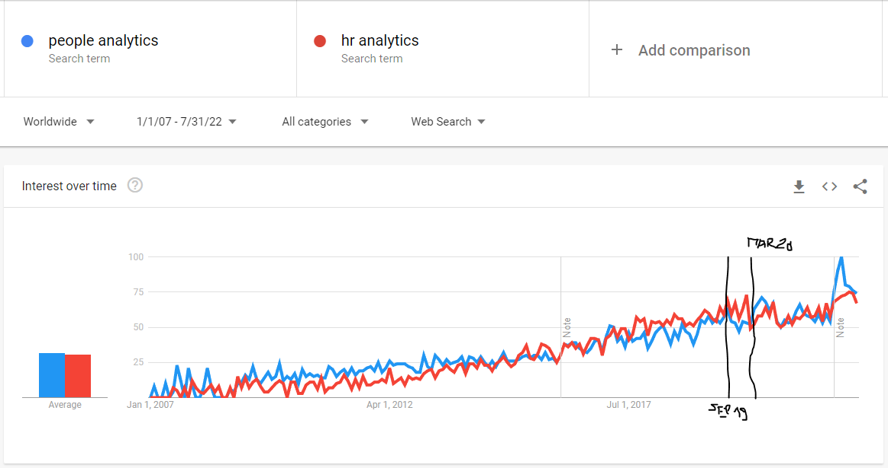
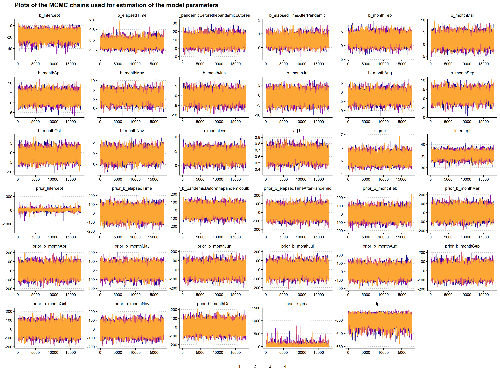
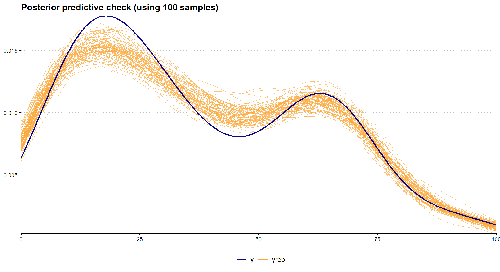
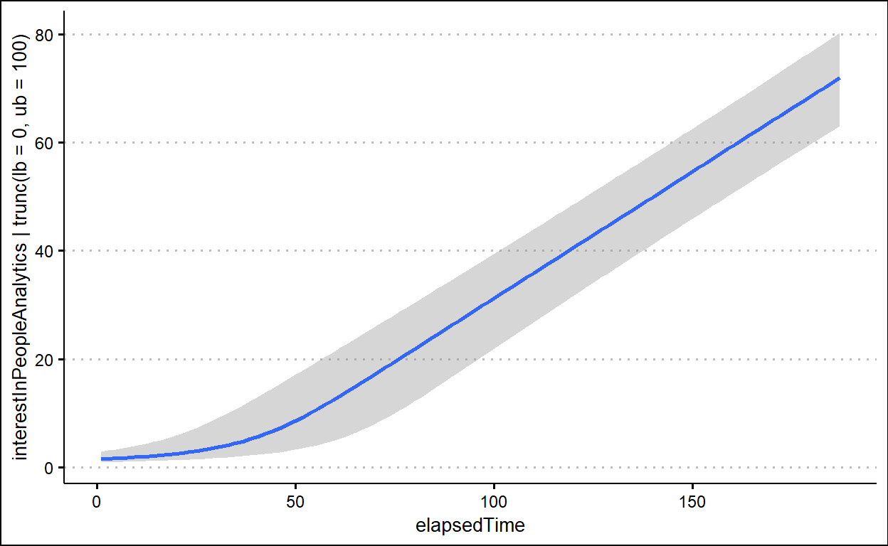

There is a fairly common perception among the people analytics professionals with whom I am in contact that after the COVID pandemic, companies are much more willing to use the insights provided by people analytics teams and incorporate them into their business-related decision-making processes.
I wondered if I could find any empirical support for this feeling in the surge of global search interest in “people analytics” and “HR analytics” terms on Google after the pandemic outbreak, assuming the pandemic broke out in March 2020.
Let’s start our quest with a simple visual inspection of a line chart showing the trend of worldwide interest in “people analytics” and “HR analytics” terms on Google from January 2007 to July 2022. (You can replicate this chart using the Google Trends website and the key terms, time range and location described above).

Towards the end of the time series, somewhere between September 2019 and March 2020, it can be seen that the trend stops increasing and starts to stagnate, except for the very last part of the graph, which shows a sharp increase in searches for both terms, but this may just be the result of the improved data collection system from January 2022 onwards (as indicated by the vertical line in the graph with a note). Thus, the data seems to suggest the opposite of what we would expect if a pandemic were to have a positive effect on interest in people analytics.
However, the picture revealed is full of noise and other irrelevant factors such as long-term trends or seasonal changes that obscure the true state of affairs. So let us take the help of inferential statistics to answer the question we are interested in. The ideal analytical tool for our use case is a segmented regression analysis of interrupted time series. It allows us to model changes in various processes and outcomes that follow intervention while controlling for other types of changes, such as trends and seasonality, that may have occurred regardless of the intervention. The model used has the following general structure:
\[Y_{t} = β_{0} + β_{1}*time_{t} + β_{2}*intervention_{t} + β_{3}*time after intervention_{t} + e_{t}\]
Since we are dealing with correlated and truncated data, we also include two additional terms in our model, an autocorrelation term and a truncation term, to handle these specific properties of our data.
But first, let’s prepare the data we will need for this type of analysis. Specifically, we will need the following five variables:
- search interest in people analytics – numerical
variable representing search interest in people analytics relative to
the highest point on the chart for the given region and time; this
variable is truncated within the interval between values of 0 and 100; a
value of 100 is the peak popularity for the term; a value of 50 means
that the term is half as popular; a score of 0 means that there was not
enough data for this term; search interest for two monitored terms
(“people analytics” and “HR analytics”) was combined by simple summation
and then normalized to a range of 0 to 100; this variable serves as a
dependent (criterion) variable;
- elapsed time – numerical variable representing the
number of months that elapsed from the beginning of the time series;
this variable enables estimation of the size and direction of the
overall trend in the data;
- pandemic – dichotomic variable indicating the
presence/absence of pandemic; as already mentioned above, for the
purpose of this analysis, the beginning of the pandemic is assumed to
have started in March 2020; this variable enables testing hypothesis
about the effect of pandemic on people’s interest in people
analytics;
- elapsed time after pandemic outbreak – numerical
variable representing the number of months that elapsed from the
beginning of pandemic; this variable enables estimation of the size and
direction of the trend in the data after the outbreak of pandemic;
- month – categorical variable representing specific month within a year; this variable enables controlling for the effect of seasonality.
Show code
# uploading library for data manipulation
library(tidyverse)
# normalize function
normalize <- function(x) {
return ((x - min(x)) / (max(x) - min(x)))
}
# uploading data
data <- readr::read_delim("./multiTimeline.csv", delim = ",")
# data munging
mydata <- data %>%
dplyr::slice(-1) %>%
tidyr::separate(
col = `Category: All categories`,
into = c("date", "peopleAnalyticsInterest", "hrAnalyticsInterest", "workforceAnalyticsInterest"),
sep = ","
) %>%
dplyr::mutate(
peopleAnalyticsInterest = as.numeric(peopleAnalyticsInterest),
hrAnalyticsInterest = as.numeric(hrAnalyticsInterest),
interestInPeopleAnalytics = peopleAnalyticsInterest + hrAnalyticsInterest,
interestInPeopleAnalytics = normalize(interestInPeopleAnalytics)*100
) %>%
# changing the format and name of the Month variable
dplyr::mutate(
date = stringr::str_glue("{date}-01"),
date = lubridate::ymd(date)
) %>%
# creating new variable month
dplyr::mutate(
month = lubridate::month(date,label = TRUE, abbr = TRUE),
month = factor(month, levels = c("Jan","Feb","Mar","Apr","May","Jun","Jul","Aug","Sep","Oct","Nov","Dec"), labels = c("Jan","Feb","Mar","Apr","May", "Jun","Jul","Aug","Sep","Oct","Nov","Dec"), ordered = FALSE)
) %>%
# limiting the time window from 2007-01-01 to 2022-07-01
dplyr::filter(
date <= "2022-07-01",
date >= "2007-01-01"
) %>%
# arranging data in ascending order by date
dplyr::arrange(
date
) %>%
# creating new variables elapsed time, pandemic, and time elapsed after pandemic outbreak
dplyr::mutate(
elapsedTime = row_number(),
pandemic = case_when(
date >= '2020-03-01' ~ 1,
TRUE ~ 0
),
elapsedTimeAfterPandemic = cumsum(pandemic)
) %>%
dplyr::mutate(
pandemic = as.factor(ifelse(pandemic == 1, "After the pandemic outbreak", "Before the pandemic outbreak"))
) %>%
# final selection of variables
dplyr::select(
date, interestInPeopleAnalytics, elapsedTime, month, pandemic, elapsedTimeAfterPandemic
)
Here is a table with the resulting data we will use for our analysis.
Show code
# uploading library for making more user-friendly data table
library(DT)
DT::datatable(
mydata,
class = 'cell-border stripe',
filter = 'top',
extensions = 'Buttons',
fillContainer = FALSE,
rownames= FALSE,
options = list(
pageLength = 5,
autoWidth = TRUE,
dom = 'Bfrtip',
buttons = c('copy'),
scrollX = TRUE,
selection="multiple"
)
)
We can now fit the model to the data and test what it tells us about
the impact of the pandemic on people’s search interest in people
analytics. We will use the
brms r package for this, which allows us to make inferences about
the model parameters within a Bayesian inferential framework. For this
reason, we must also specify some additional parameters
(e.g. chains, iter or warmup) of
the
Markov Chain Monte Carlo (MCMC) algorithm that generates posterior
samples of our model’s parameters.
The Bayesian framework also allows us to specify priors for the estimated parameters and use them to incorporate our domain knowledge into the analysis. The specified priors are important for both parameter estimation and hypothesis testing because they define our initial information state before we consider our data. Here, we will use relatively broad, uninformative, and only slightly regularizing priors (that is, the inference results will be very close to the results of standard, frequentist parameter estimation/hypothesis testing).
Show code
# specifying wide, uninformative, and only mildly regularizing priors
priors <- c(brms::set_prior("normal(0,50)", class = "b", coef = "elapsedTime"),
brms::set_prior("normal(0,50)", class = "b", coef = "elapsedTimeAfterPandemic"),
brms::set_prior("normal(0,50)", class = "b", coef = "pandemicBeforethepandemicoutbreak"),
brms::set_prior("normal(0,50)", class = "b", coef = "monthApr"),
brms::set_prior("normal(0,50)", class = "b", coef = "monthAug"),
brms::set_prior("normal(0,50)", class = "b", coef = "monthDec"),
brms::set_prior("normal(0,50)", class = "b", coef = "monthFeb"),
brms::set_prior("normal(0,50)", class = "b", coef = "monthJul"),
brms::set_prior("normal(0,50)", class = "b", coef = "monthJun"),
brms::set_prior("normal(0,50)", class = "b", coef = "monthMar"),
brms::set_prior("normal(0,50)", class = "b", coef = "monthMay"),
brms::set_prior("normal(0,50)", class = "b", coef = "monthNov"),
brms::set_prior("normal(0,50)", class = "b", coef = "monthOct"),
brms::set_prior("normal(0,50)", class = "b", coef = "monthSep"))
# defining the statistical model
model <- brms::brm(
interestInPeopleAnalytics | trunc(lb = 0, ub = 100) ~ elapsedTime + pandemic + elapsedTimeAfterPandemic + month + ar(p = 1),
data = mydata,
family = gaussian(),
prior = priors,
chains = 4,
iter = 20000,
warmup = 2000,
seed = 1234,
sample_prior = TRUE,
control = list(adapt_delta = 0.9),
refresh = 0,
silent = 2
)
Before making any inferences, we should perform several validation checks to ensure that the mechanics of the MCMC algorithm worked well and that we can use the generated posterior samples to make inferences about the parameters of our model. There are many ways to do this, but here we will only use a visual check of the MCMC chains. We want the plots of these chains to look like a hairy caterpillar, indicating the convergence of the underlying Markov chain to stationarity, and the convergence of the Monte Carlo estimates to population quantities, respectively. As can be seen in the graph below, we can observe the characteristics we are looking for in the MCMC chains described above. (For additional MCMC diagnostics procedures, see for example Bayesian Notes from Jeffrey B. Arnold.)
Show code
# uploading library for plotting Bayesian models
library(bayesplot)
# plotting the MCMC chains
bayesplot::mcmc_trace(
model,
facet_args = list(nrow = 6)
) +
ggplot2::labs(
title = "Plots of the MCMC chains used for estimation of the model parameters"
) +
ggplot2::scale_color_viridis_d(option = "plasma", end = 0.8, name = "") +
ggthemes::theme_clean() +
ggplot2::theme(
legend.position = "bottom",
legend.background = element_blank()
)

It is also important to check how well the model fits the data. To do this, we can use the posterior predictive check, which uses a specified number of selected posterior values of the model parameters to show how well the fitted model predicts the observed data. In the graph below we see that the model fits the observed data reasonably well.
Show code
# investigating the model fit
# specifying the number of samples
ndraws = 1000
brms::pp_check(
model,
ndraws = ndraws
) +
ggplot2::labs(
title = stringr::str_glue("Posterior predictive check (using {ndraws} samples)")
) +
ggplot2::scale_color_viridis_d(option = "plasma", end = 0.8, name = "") +
ggthemes::theme_clean() +
ggplot2::theme(
legend.position = "bottom",
legend.background = element_blank()
)

We can now use the parameters of our model to obtain information about our main question. Specifically, we are interested in the value of the coefficient of the pandemic term in our model. This represents how much and in what direction the search interest in people analytics changed after the pandemic outbreak.
Show code
# generating a summary of the fitted model
summary(model)
Family: gaussian
Links: mu = identity; sigma = identity
Formula: interestInPeopleAnalytics | trunc(lb = 0, ub = 100) ~ elapsedTime + pandemic + elapsedTimeAfterPandemic + month + ar(p = 1)
Data: mydata (Number of observations: 187)
Draws: 4 chains, each with iter = 20000; warmup = 2000; thin = 1;
total post-warmup draws = 72000
Correlation Structures:
Estimate Est.Error l-95% CI u-95% CI Rhat Bulk_ESS Tail_ESS
ar[1] 0.66 0.07 0.51 0.80 1.00 39068 32669
Population-Level Effects:
Estimate Est.Error l-95% CI
Intercept -20.21 6.94 -35.46
elapsedTime 0.48 0.03 0.42
pandemicBeforethepandemicoutbreak 9.82 4.72 1.02
elapsedTimeAfterPandemic 0.53 0.27 0.01
monthFeb 2.69 1.42 -0.10
monthMar 2.87 1.84 -0.73
monthApr 4.25 2.06 0.22
monthMay 2.37 2.16 -1.90
monthJun 0.12 2.23 -4.29
monthJul 0.73 2.26 -3.70
monthAug -0.43 2.25 -4.88
monthSep 2.15 2.18 -2.16
monthOct -0.62 2.06 -4.67
monthNov -0.25 1.84 -3.87
monthDec -4.27 1.42 -7.08
u-95% CI Rhat Bulk_ESS Tail_ESS
Intercept -8.04 1.00 34121 28298
elapsedTime 0.56 1.00 46072 27800
pandemicBeforethepandemicoutbreak 19.54 1.00 47263 46026
elapsedTimeAfterPandemic 1.08 1.00 55871 47537
monthFeb 5.47 1.00 38534 49427
monthMar 6.48 1.00 27927 45187
monthApr 8.29 1.00 23692 39644
monthMay 6.64 1.00 22274 35939
monthJun 4.48 1.00 21235 35477
monthJul 5.15 1.00 20935 35978
monthAug 3.98 1.00 21300 35538
monthSep 6.46 1.00 22048 35850
monthOct 3.47 1.00 24344 40665
monthNov 3.38 1.00 27750 43578
monthDec -1.47 1.00 41393 50102
Family Specific Parameters:
Estimate Est.Error l-95% CI u-95% CI Rhat Bulk_ESS Tail_ESS
sigma 4.95 0.28 4.43 5.55 1.00 66232 51991
Draws were sampled using sampling(NUTS). For each parameter, Bulk_ESS
and Tail_ESS are effective sample size measures, and Rhat is the potential
scale reduction factor on split chains (at convergence, Rhat = 1).The following graph shows the posterior distribution of the main
parameter of interest. We can see that it is on the right-hand side of
the zero value, which supports the claim that there is an effect of the
pandemic on people’s interest in people analytics; however, it is on the
opposite side of the zero value than we would expect if the pandemic
were to have a positive effect on people’s interest in people analytics.
Thus, our analysis supports our initial visual impression that the
pandemic outbreak did not increase people’s interest in people
analytics, but rather the opposite, in fact, almost 99% of the posterior
distribution of the pandemicBeforethepandemicoutbreak
parameter is greater than 0.
Show code
# uploading library for working with output from Bayesian models
library(tidybayes)
paramViz <- model %>%
tidybayes::gather_draws(b_pandemicBeforethepandemicoutbreak) %>%
dplyr::rename(value = .value)
dens <- density(paramViz$value)
paramViz <- tibble(x = dens$x, y = dens$y)
# visualizing the posterior distribution of the model's b_pandemicBeforethepandemicoutbreak parameter
ggplot2::ggplot(paramViz, aes(x,y)) +
ggplot2::geom_area(data = filter(paramViz, x > 0), fill = "#fca636"
) +
ggplot2::geom_area(data = filter(paramViz, x <= 0), fill = "grey") +
ggplot2::geom_line() +
ggplot2::scale_x_continuous(breaks = seq(-10, 40, 10)) +
ggplot2::labs(
title = "Posterior distribution of the b_pandemicBeforethepandemicoutbreak parameter",
y = "Density",
x = "pandemicBeforethepandemicoutbreak"
) +
ggthemes::theme_clean()

Show code
# uploading library for working with output from Bayesian models
library(posterior)
# extracting posterior samples
samples <- posterior::as_draws_df(model, seed = 1234)
# probability of b_pandemicBeforethepandemicoutbreak coefficient being higher than 0
sum(samples$b_pandemicBeforethepandemicoutbreak > 0) / nrow(samples)
[1] 0.9861111Given that the Google search interest in people analytics is a fairly distant proxy for its actual use in HR and business practice, we should take these results with a grain of salt and try to find other data sources that would support our results. For example, Frank Corrigan, head of analytics at Ponder, came up with the idea of analyzing changes in postings for people analytics job positions over time. A good inspiration for anyone willing to spend some time getting at and analyzing such data.
In addition to the main question addressed here, we may be interested in other insights provided by the model. To this end, we plot the marginal effects of each predictor.
Show code
# plotting marginal effects of predictors used
figList <- plot(brms::marginal_effects(model, probs = c(0.025, 0.975)), theme = ggthemes::theme_clean(), ask = FALSE)
Show code
# uploading library for arranging multiple ggplots
library(ggpubr)
# putting all graphs with marginal effects together
ggpubr::ggarrange(
plotlist = list(figList[[1]] + geom_line(color = "#0d1687", size = 1), figList[[4]] + geom_point(color = "#0d1687", size = 3), figList[[2]] + geom_point(color = "#0d1687", size = 3), figList[[3]] + geom_line(color = "#0d1687", size = 1)),
nrow = 4
) %>%
ggpubr::annotate_figure(
top = text_grob("Marginal effects of predictors used"),
bottom = text_grob("Point estimates are shown along with 95% credible intervals.", hjust = 1, x = 1, face = "italic", size = 10)
)

What do the resulting graphs show us?
- Unsurprisingly, search interest in people analytics has clearly been on an upward trend over the last 15 years.
- Within each year, search interest is driven by the seasonality of work and holidays, i.e. lower search interest during the holiday season - June, July, August and December - and higher search interest during the rest of the year.
- A surprising fact we already know - search interest in people analytics is lower after a pandemic outbreak than before the pandemic.
- The trend of search interest in people analytics is only slightly increasing after the pandemic.
Two last insights combined, the resulting picture does not much support the impression of many of my people analytics fellows about the growing importance of people analytics in HR and business leaders’ decision making. But as suggested above, this is only one signal, and a relatively weak one, so we shouldn’t draw any strong conclusions based on it.